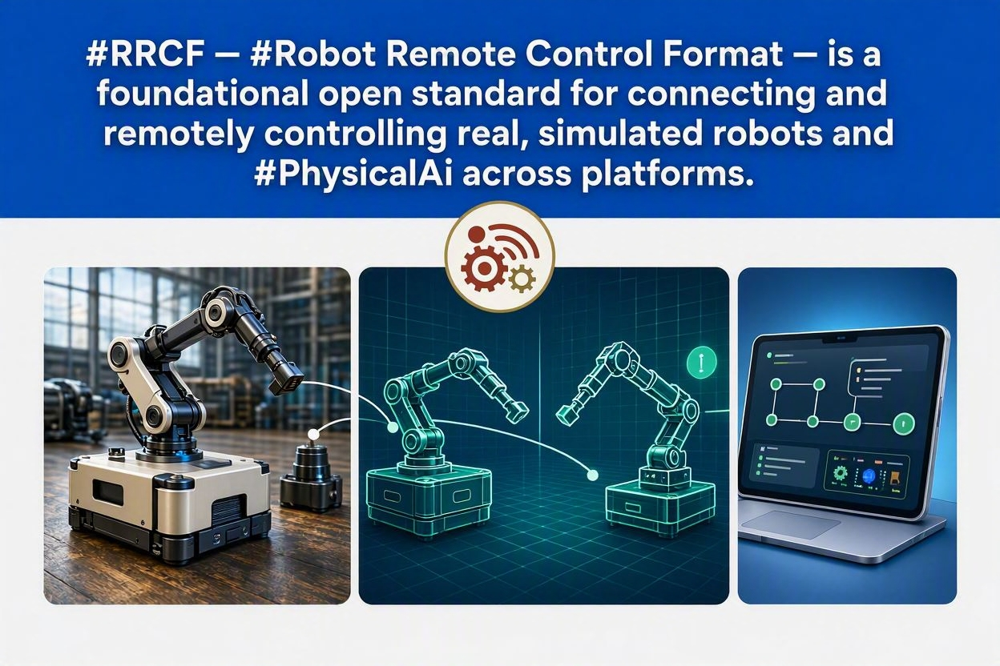

RRCF (Robot Remote Control Format) is an open, machine-readable file format in which any robot declares its entire operator control interface — so any web UI, fleet dashboard, or VLA model can control it without per-robot integration code.

Robot deployment is heading toward billions of units across every morphology — nanorobots, agricultural swarms, industrial humanoids, home assistants, aerial and marine vehicles. Every one needs a human, or an AI acting on a human's behalf, in the loop: an operator, a supervisor, or someone who can hit the e-stop.
Today every robot ships its own bespoke controller and its own integration effort. RRCF is the missing operator layer in the robotics standards stack — it doesn't replace URDF/MJCF/SDF (physical description) or VDA 5050/Open-RMF (fleet mission assignment), it completes the stack above them.
| Layer | Standards | Answers |
|---|---|---|
| Physical | URDF, MJCF, SDF, USD | What is this robot made of? |
| Fleet | VDA 5050, Open-RMF | How are missions assigned? |
| Operator | RRCF | How does any operator control any robot? |
RRCF spans control, fleet coordination, integration, safety, and choreography — all from one declared file.
One unified operator UI for any robot, any morphology — rendered directly from the declaration, no per-robot code.
Complements VDA 5050 and Open-RMF rather than competing — RRCF sits above the mission-assignment layer.
The same wire format used for control doubles as the universal integration format for data pipelines, VLA training, and digital twins.
E-stop, watchdog timeout, geofence, and speed limits standardized across every robot, every morphology.
.rrcm mission files for synchronized multi-robot operations — GPS clock-synced, pre-computed trajectories.
Every robot declares exactly one primary category, with capabilities layered on as attachments (arms, grippers, sensors, tools).
.rrcf declarationMorphology, skills, safety limits, and transport — all in one XML document that any compliant controller or VLA model can load at runtime.
<?xml version="1.0" encoding="UTF-8"?> <rrcf version="1.0" xmlns="https://rrcf.io/schema/1.0"> <meta> <name>Unitree Go2 + Z1 Arm</name> <vendor>Unitree Robotics</vendor> <physical_ref format="urdf" path="go2_z1.urdf"/> </meta> <primary category="legged"> <locomotion axes="vx vy wz" max_vx="1.5" max_wz="2.0"/> <modes>stand trot bound crawl prone</modes> </primary> <skills> <skill id="sit" label="Sit" standard="true" cmd='{"mode":"sit"}'/> <!-- vendor-custom skill — VLA reads at runtime, no retraining --> <skill id="heel_stretch" label="Yoga Pose" cmd='{"mode":"custom_01"}'/> </skills> <safety> <estop required="true" topic="/rrcf/go2/estop"/> <watchdog timeout_ms="500" action="halt"/> </safety> <transport> <endpoint role="operator_cmd" protocol="rrcf_mqtt" topic="/rrcf/go2/cmd"/> </transport> </rrcf>
Full annotated example with HUD, all five input modalities, and custom controls: see spec §7.1.
A .rrcf file is designed to be loaded as context by a
Vision-Language-Action model at session start — the same way a
document is retrieved for RAG.
// every input modality produces the same // normalized wire format command { "rrcf": "1.0", "category": "legged", "lx": 0.75, "ly": 0.0, "rx": -0.25, "ry": 0.0, "mode": "trot", "skill": null, "estop": false, "input": "touch_web", "twist": { "linear": {"x":0.75,"y":0.0,"z":0.0}, "angular": {"x":0.0,"y":0.0,"z":-0.25} }, "ts": 1719000000000 }
RRCF defines conformance separately for the robot and the controller — "controller" meaning any operator surface: a human-facing web UI, a fleet console, another robot issuing commands, or a VLA model. Meet your side of the contract and you interoperate with every other compliant implementation, without pairwise integration.
<rrcf version="1.0"> block, standalone or embedded in its description file.estop:true — no exceptions..rrcf file standalone — no other description format required.touch_web as the baseline input modality.estop field and a Twist sub-object in every transmitted command.[-1.0, 1.0] in wire-format output.This split is what makes the three operator types — a human on a touchscreen, a fleet console commanding a robot on behalf of another robot, and a VLA model generating skill calls — fungible from the robot's point of view: all three speak the same wire format and are held to the same safety-limit contract, so the robot never needs to know which kind of operator it's talking to. Full requirements, including transport security and rate-limiting: spec §11–§13.
Generate a draft .rrcf from an existing robot description, or read the full specification.
Drag and drop a physical description file — get a draft .rrcf operator-interface declaration back. Runs entirely client-side, nothing is uploaded.
The full RFC-style spec — motivation, schema, wire format, conformance requirements, and governance roadmap.
Read PDFA working React operator console covering all nine base morphology registries, driven entirely from the category declaration.
View on GitHubMake an existing ROS 2 robot RRCF-transport compliant in an afternoon: MQTT↔ROS 2 translation, watchdog, e-stop, speed clamping — no control-stack rewrite.
View on GitHubWhen do you need a physical description file, an RRCF, or both — and should you publish yours publicly?
Read Guide| Version | Planned additions |
|---|---|
| RRCF-1.0 | 12 categories, all 5 pillars, 5 input modalities |
| RRCF-1.1 | Voice modality refinements, gesture spec, XR training |
| RRCF-2.0 | World-context block, benchmarking, RL reward hints, medical/surgical/soft-robot categories |
| RRCF-3.0 | Neural interface, zero-G thruster primitive |
RRCF follows semantic versioning. Category proposals go through: proposal → 60-day review → draft → three independent implementations → ratification → publication. Published under Apache License 2.0.